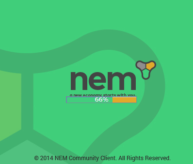
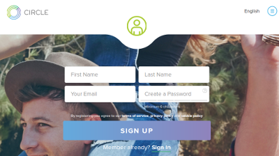
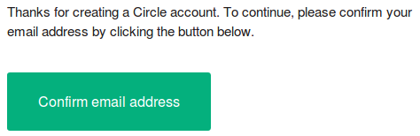
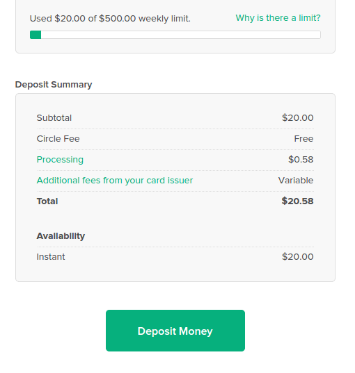
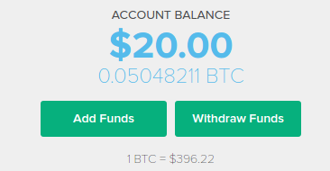
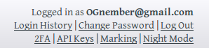
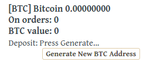
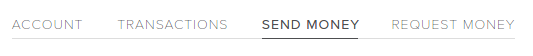
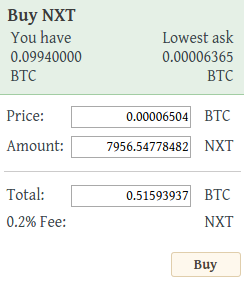

What's NEM?
NEM (New Economy Movement) is a brand-new, upcoming 2nd-generation cryptocurrency.
NEM is being written from scratch with 100% original code, sharing nothing with any other digital currency.
NEM is not just a currency, but a technological platform. It has the ability to support many activities which involve a trust-less consensus between two parties: a decentralised exchange, messaging, reputation systems etc.
However, NEM is more than this. This movement was built upon foundations of fairness, equality and solidarity; foundations which every NEM stakeholder and user should respect and try to adhere to.
History of NEM
-
Initial fundraising - 1/19/2014 to 2/17/2014
-
Waiting list open - 2/21/2014 to 4/10/2014
-
Public auditing of stakeholder list - 3/2/2014 to 4/9/2014
-
Waiting list invitation - 4/28/2014 to 5/9/2014
-
Final stakeholder list published - 5/10/2014
-
Development contract (first draft) published - 5/25/2014
-
NEMstake on asset exchange - 5/30/2014
-
Open Alpha release - 6/25/2014
-
Open Beta release - 10/20/2014
-
Official launch - Scheduled for November
How to Redeem your NEM
-
Original Bitcointalk Stakeholders
-
There is an easy to follow infograph HERE
-
HERE Is an explanation on medium
-
HERE Is the forum post dedicated to the topic.
-
AE NEMstake Holder
Here is an infograph made by mixmaster, about how to claim your NEM AE NEMstake Redemption How-To
There is also a video made my nember kodtycoon, it explains how to do the entire process of turning in your NEMstake for NEM. Make sure to follow all the steps.
Initial NEM Distribution
NEM will have a maximum of 4 000 000 000 coins, all distributed with the genesis block. Each Stakeholder will be receiving 1 000 000 to 2 000 000 NEM per stake. Each NEM coin will be divisible to 6 figures (i.e. the smallest amount of NEM is 0.000001 NEM). The total supply will be distributed as follows:
-
72% - distributed to stakeholders on the final Bitcointalk Stakeholder list.
-
10% - reserved for the core development team to fund development of the NCC and NIS up to the release of V.1 of the blockchain.
-
10% - reserved for the core development team to fund development of the NCC and NIS after the release of V.1 of the blockchain.
-
5% - reserved for the extended development team; those who are working on promoting NEM and the NEM ecosystem.
-
The 10% development reserve will be allocated under the following guidelines:
Released gradually over time: maximum average of 10% every 2 months. This means the full amount will be distributed in close to 20 months (probably longer); a testament to the dedication of the developers to their long-term plans for NEM's future.
The reserve will be used to fund important features and big projects, such as private transactions, encrypted messaging, multi-signature implementation and more.
Checking Browser Bit Version
If you need to install Java, then the first step is to check if your browser is 32-bit or 64-bit. Note: that there is a difference between having a 64-bit operating system, and a 64-bit browser.
-
In Chrome, type chrome://chrome in your search bar, you will see the version #, and at the end of the line you will see bit #. either 32-bit or 64-bit.
-
In Firefox, type about: in your browser. You will see a line that starts with Build-Identifier, if in that line you see: x86_64, then you are using a 64-bit browser. If you see i686, you are using a 32 bit browser
-
In Opera , type opera:about in your browser. Under Browser identification, you will see x86_64 for 64-bit, or you will see i686 for 32-bit
-
In Internet Explorer, it can be difficult to tell which version you are using, you can find some clues HERE, however, you should take this as a sign that you should be using one of the browsers mentioned above instead.
Installing Java - Windows
Check your java version
HERE, if you are using Java Version 8, update 25 or above, you are ready to install the NEM client.
Here is a video tutorial on how to install Java 8 on Windows 8, although the instructions are for Java 7, they are identical to the instructions for Java 8. When selecting the Java version make sure to pick 32-bit or 64-bit, depending on your browser, which was discussed in
"Checking Browser Bit Version"
There is also a wikihow entry on installing Java 8
HERE
Installing Java - Mac OSX
Here is a video tutorial on how to install Java on Mac OSX. When selecting the Java version make sure to pick 32-bit or 64-bit, depending on your browser, which was discussed in
"Checking Browser Bit Version"
Also the Java website has a good Mac OSX install tutorial, that can be found
HERE
Installing Java - Linux
How to install Java 8 in Ubuntu/Mint
It is essentially these commands, if you don't want to watch the video:
sudo apt-get purge openjdk*
sudo add-apt-repository ppa:webupd8team/java
sudo apt-get update
sudo apt-get install oracle-java8-installer
sudo apt-get install oracle-java8-set-default
Installing NEM Client
-

The developers have made installing NEM Client a rather easy process, just Get the NEM Monitor, and accept the download, on Chrome it will ask you to save the file, save the file wherever it is convenient for you.
-
nem monitor does all the heavy lifting for you, it installs NIS and NCC, and after about 3-5 minutes, you are ready to log in. During the installatio process, you will notice a NEM Icon in your toolbar, once it is ready, it will look like this:
-
Your browser should have opened automatically to http://127.0.0.1:8989/ncc/web/index.html, if it hasn't, simply go there now. You will be asked to create an account or login to anexisting account, most likely if you are reading this, you will be creating a new account.
-
It is very important that the password you use is secure. I recomend generating and storing your passwords with a password manager. The password must be enough bits to prevent a brute force attack, but it also must be remembered. Losing your password is not an option, there is no way to recover an account if the password is lost. Keepass Keepassx are both good password managers, and there are many more options as well.
How to Purchase NEM
In order to purchase NEM, you currently need to purchase Bitcoin first. In the future NEM will be able to directly be bought with fiat, but for now, you must use Bitcoin (or another cryptocurrency. Below I will lay out how to purchase Bitcoin, if you already have Bitcoin, skip to STEP 6
Buying Bitcoin
Every day new options for buying Bitcoin become available. In the past I would have used coinbase, however, today I will use circle.

-
First, go to circle.com, and fill in your name, email address and password.
-

You will then receive a confirmation email, simply confirm the email address by clicking on the link
-
You will then be prompted to enter your phone number, this enables extra security for your account, taken from Circle "This makes your account more secure by combining something you know (your password) with something you have (your phone) when you authenticate. When you take certain actions, we send a code to your phone to verify that it's you taking the action."
- 
You are almost done, now it's time to enter the method of payment you plan to use. Using a credit card results in an instant transfer of Bitcoin to your account, but some company's charge a fee (I was charged a 2.9% fee, but your expereience could vary). You can also link a bank account, and pay 0 fees, but that will take a few days to be verified.
-
Now it is time to make the purchase, on the home page, click Add Funds. You will see a page similar to the image below. Simply choose one of the funding sources you added in the previous step, and enter the amount of USD or other fiat you want to convert into Bitcoin.
To learn more about how to use circle, check out their Tips page.

Buying NEM
- Congratulations, you now have Bitcoin! To purchase NEM, you will need to use an exchange such as Poloniex. Creating an account there is nearly identical to circle, however it should be faster as you will not be prompted to add features such as 2 factor authentication (although I highly reccomend enabling 2FA, there is a link under your username)
- 
Once logged into your Poloniex account, click on the "Balances" tab, and scroll down to [BTC] Bitcoin, and click on "Generate New BTC Address".
Take a note of this address, you will need it for your next step.
-

From your circle home page, choose "SEND MONEY".
Take the BTC address you created in the previous step, and paste it into the "To" field, then write the amount (In Fiat), that you want to transfer to Poloniex. If this is your first time doing something like this, I highly reccomend sending a small test payment first.
You are almost there, this transfer will take a few minutes to be verified, so don't worry if it doesn't happen as fast as the purchase on circle.
- 
Once your Bitcoins are in your Poloniex wallet, you are ready to buy NEM. Poloniex, and most other exchanges, offer multiple ways to buy or sell cryptocurrencies, but I will outline the simplest way. Click on the exchanges tab, and click on NEM in the BTC Markets on the top right portion of the screen. Now Scroll down past "Buy NEM" to view the "Sell Orders". These orders are put up by people that have NEM, and are looking to trade it for BTC. Simply select the topmost Sell order, you will notice that the "Buy NEM" box is now filled with the order you just clicked on. Select "Buy", and you are now a proud owner of NEM.
-
We highly recommend storing NEM in your own private wallet, rather than storing it on a centralized exchange. You can read all about how to do that, and why it is so important, HERE